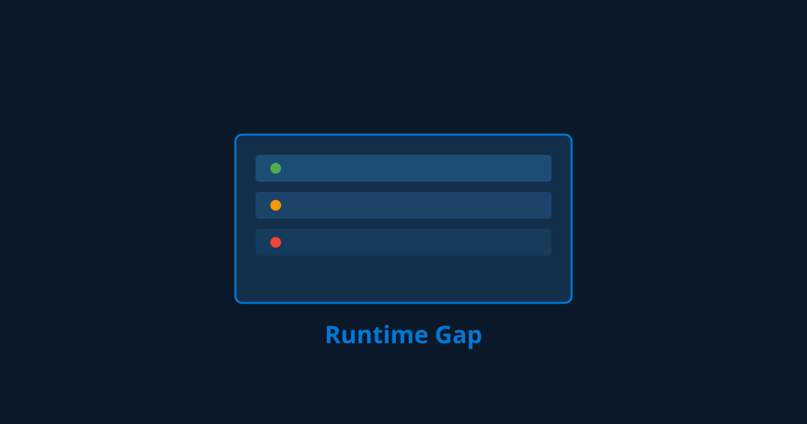

The Prompt Drift Gap: Why 91% of AI Agents Degrade in Production Without Code Changes — And Why Every Static Prompt Is the Most Expensive Assumption Nobody Monitored
91% of AI agents degrade in production within 90 days without a single code change. Why prompt drift is the most expensive monitoring blind spot in enterprise AI — and the four patterns that catch it.